-

The course explains digital representation and analysis of
geospatial phenomena and provides foundations in methods and algorithms
used in GIS analysis. Special focus is on terrain modeling, geomorphometry,
watershed analysis and introductory GIS-based modeling of
landscape processes (water, sediment).
The course includes analysis from lidar data, coastal change assessment and 3D visualization.
All assignments are done in two software packages – GRASS GIS and ArcGIS –
to untangle general geospatial analytical concepts from software specifics.
The GRASS GIS part
is very popular even outside NCSU.
-

The course covers emerging field of open science and
deals with reproducibility and replicability challenges
of computational research. The students gain a
hands-on experience with tools used by scientists to create
geospatial research which can be validated by the wider
geospatial community. Several geospatial open source tools
are discussed in connection with general-purpose and
text authoring tools such as next generation interactive
documents and revision control tools. Although the focus of
the course is open science, many of the tools used in the
course are used in the industry. The course covers how
open source communities and software development process
work and how to apply this for research in a lab group.
-
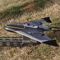
The course covers monitoring, analysis, and modeling of 3D
landscape change using Unmanned Aerial Systems (UAS) and lidar data.
The principles of UAS data collection, processing of 3D point clouds
and the resulting terrain models are explained followed by hands-on
experience with multitemporal data collected by
the NCSU NextGen Air Transportation (NGAT) program.
The course also covers techniques for analysis and visualization
of lidar data time series and outputs of dynamic simulations,
including immersive visualization at the Hunt library facilities.
The students will have the opportunity to work with the Tangible Landscape system
to explore impact of 3D terrain change on landscape parameters and processes.
-
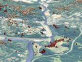
This course focuses on theoretical concepts and computational methods
that describe, represent and simulate the functioning of real-world
processes. We define the general properties of geospatial computation
and explain the role of simulations in analysis and understanding of
observed phenomena, testing of hypotheses and theories, and prediction
of spatio-temporal systems behavior. We discuss the current methods
and techniques for simulations using deterministic, stochastic and
rule-based models as well as agent-based simulation of complex systems.
Hands-on component of the course will cover implementation of simulations
in GIS and advanced applications driven by the student’s research.
Open science tools will be used for assignments. Prior programming
experience is expected.
-
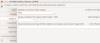
Learn how to develop custom tools (aka addons or modules) for GRASS GIS in Python and, if you like, in C.
-
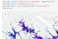
We will explain and practice GRASS GIS concepts like location, computational region, or mask and demonstrate them on examples of efficient raster, vector, and imagery processing. We will go through several options to parallelize your workflows that are applicable for various computing platforms including your laptop and HPC. Finally, this workshop will be run in a JupyterLab environment, taking advantage of the latest GRASS GIS Python features for Jupyter, including pretty 2D, 3D, webmap, and temporal visualizations.
-
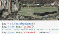
In this workshop, we explain and practice various GRASS GIS concepts.
We go through simple, yet useful examples of vector, raster, and image processing functionality.
Building on these examples, we employ Python scripting to parallelize our workflows to get you ready for your next big data project.
This workshop was created for FOSS4G 2021 and delivered virtually using Jupyter Notebooks hosted on Binder.
-
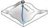
These activities lead students through an introduction to
geospatial computation simulation and modeling using
a geospatial tangible interface - Tangible Landscape.
-
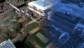
This tutorial has several components, starting with
introduction to Blender and its interface. It further includes:
advanced shading and rendering of remote sensing imagery,
working with geospatial data (viewshed example),
photorealistic landscape modeling,
3D web GIS with Blend4Web, and processing of UAV data.
-
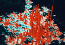
In this tutorial, you use Kepler.gl
an open-source data visualization tool created by Uber's data
visualization team to visualize crime data in Raleigh,
North Carolina from the city's open data portal.
By completing the tutorial you will learn how to add data
into Kepler.gl and customize it using various marks,
channels, and filters.
-
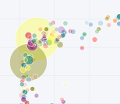
Dash is a Python framework for building interactive web applications
for data visualization. Dash is rendered in a browser and uses
CSS, so it is highly customizable and easy to share via URLs.
Dash uses purely Python with html components and Plot.ly graph
objects.
This tutorial will demonstrate how to create a basic dashboard
application showing a bubble chart, map, and interactive
filtering with a range slider.
-
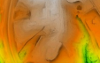
This workshop shows the tools in GRASS GIS for processing point clouds obtained
by lidar or through processing of UAV imagery. It includes exploring the properties of a point cloud,
interpolating surfaces, and performing advanced terrain analyses to detect landforms and artifacts.
It goes through several terrain 2D and 3D visualization techniques
and finishes with vegetation analysis.
This workshop was created for
FOSS4G 2017.
-
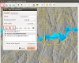
We aim this workshop at absolute beginners without prior knowledge of GRASS GIS.
It includes introduction to GRASS GIS folder structure and environment,
graphical user interface and command line, and Python scripting.
We go through simple examples of vector, raster, and image processing functionality.
This workshop was created for
FOSS4G 2017.
-
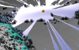
What if your geospatial data and simulations are converted on-the-fly into realistic,
interactive and immersive 3D worlds? We explore how to automate importing and processing of various types of geospatial data
using Blender, an open-source 3D modelling and game engine software.
This workshop includes introduction into Blender GUI and goes over the techniques
to increase the realism of our 3D world through applying textures, shading, and lighting.
This workshop was created for
FOSS4G 2017.
-
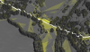
We introduce GRASS GIS and Blender, and show examples
of their processing capabilities and visualization techniques on viewshed modeling case study.
This workshop was created for
ICC 2017.
-
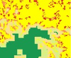
This workshop provides a step by step tutorial to guide beginners from basic raster
and vector analysis to more complex topics such as landscape structure analysis,
lidar data processing, and spatio-temporal data handling and visualization.
You will also learn how to use GRASS GIS with Python to optimize your workflows,
and how to leverage the integration of R with GRASS GIS for statistical analysis.
This workshop was created for US-IALE 2017.
-

Learn about scripting, graphical and tangible interfaces for GRASS GIS,
the powerful desktop GIS and geoprocessing backend. We start with the Python interface
and finish with Tangible Landscape, a tangible interface for GRASS GIS.
This workshop was created for FOSS4G NA 2016.
-

This workshop introduces GRASS GIS and FUTURES urban growth modeling framework.
This workshop was created for US-IALE 2016 Annual Meeting.
-

Introduction to all parts of scripting for GRASS GIS using Python
programming language. Advanced techniques required to create
fully blown GRASS GIS module which can be published as an addon
are shown as well.
This workshop was created for
FOSS4G Europe 2015.
-

Introduction to geospatial processing with GRASS GIS. The course covers
basic control of the graphical user interface, invoking GRASS modules
in different ways including scripting and various geospatial analysis.
-

First, we will introduce you to GRASS GIS 7, including its spatio-temporal
capabilities and you will learn how to manage and analyze geospatial data time series.
Then, we will explore new tools for visualization of spatio-temporal data.
You will create both 2D and 3D dynamic visualizations directly in GRASS GIS 7.
Additionally, we will explain the Space Time Cube concept using various
applications based on raster and vector data time series.
You will learn to manage and visualize data in space time cubes (voxel models).
No prior knowledge of GRASS GIS is necessary,
we will cover the basics needed for the workshop.
This workshop was created for FOSS4G 2014.
-
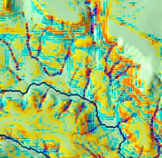
This tutorial focuses on modeling erosion and deposition patterns in complex landscapes.
It explains the concepts behind soil erosion and deposition
estimation including different methods
(USLE, USPED). The GIS workflows are available for both GRASS GIS
and ArcGIS including detailed instructions and figures.
The tutorial has been prepared using data from the Ft. Hood installation.
Basic GIS knowledge is recommended.
-

This workshop covers the differences between Git and GitHub and provides
brief introduction to basic Git commands to help researchers start using it
for their own projects.